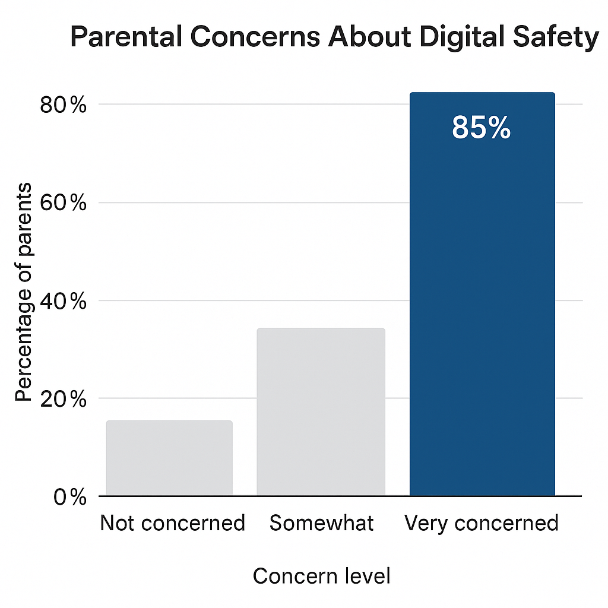
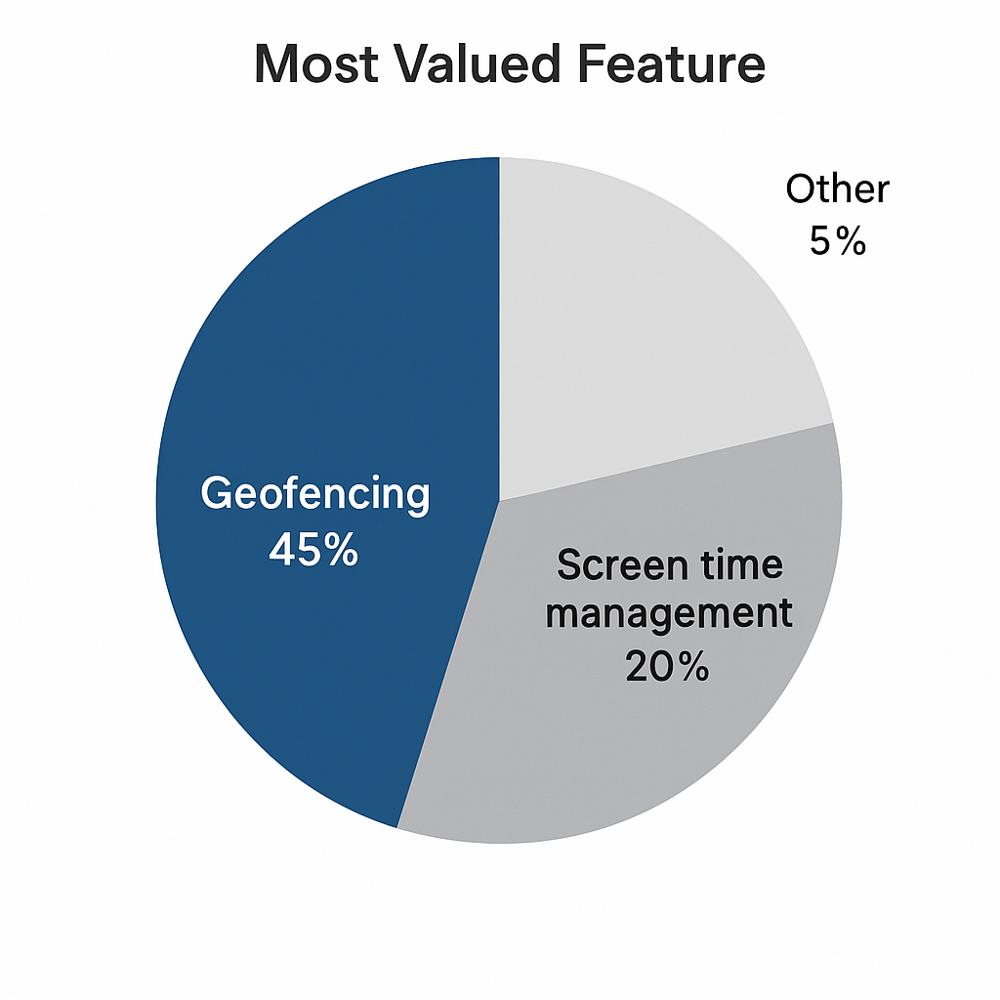
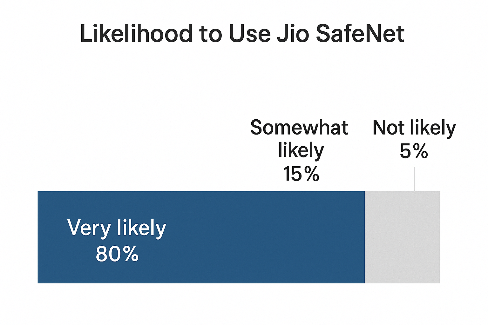

Jio SafeNet & Geofencing Survey Results
Note: These are hypothetical results for demonstration purposes.
View the survey page for context.
Sample Size
500 parents (assumed)
Key Findings
- 85% of parents are “very concerned” about exposure to inappropriate online content.

- 60% reported their children accessed inappropriate content at least once.
- 78% find managing screen time “very challenging.”
- 82% would “definitely” use a screen time management tool.
- 90% consider real-time location tracking “very important.”
- 88% would “definitely” use geofencing alerts for safe zones.

- 80% are “very likely” to use a service combining safe browsing, screen time management, and geofencing.

Conclusion
The results validate the need for Jio SafeNet & Geofencing, highlighting strong parental demand for integrated digital and physical safety solutions.